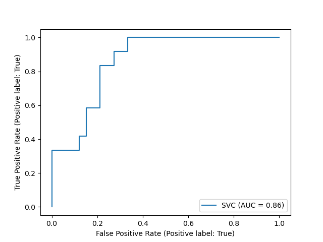
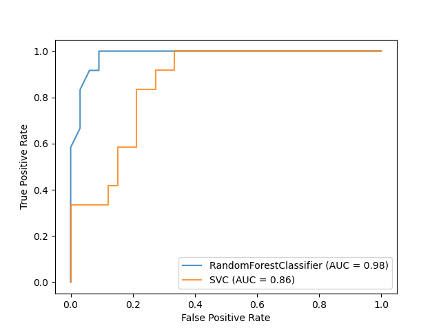

Note
Click here to download the full example code or run this example in your browser via Binder
ROC Curve with Visualization API¶
Scikit-learn defines a simple API for creating visualizations for machine learning. The key features of this API is to allow for quick plotting and visual adjustments without recalculation. In this example, we will demonstrate how to use the visualization API by comparing ROC curves.
print(__doc__)
Load Data and Train a SVC¶
First, we load the wine dataset and convert it to a binary classification problem. Then, we train a support vector classifier on a training dataset.
import matplotlib.pyplot as plt
from sklearn.svm import SVC
from sklearn.ensemble import RandomForestClassifier
from sklearn.metrics import plot_roc_curve
from sklearn.datasets import load_wine
from sklearn.model_selection import train_test_split
X, y = load_wine(return_X_y=True)
y = y == 2
X_train, X_test, y_train, y_test = train_test_split(X, y, random_state=42)
svc = SVC(random_state=42)
svc.fit(X_train, y_train)
Plotting the ROC Curve¶
Next, we plot the ROC curve with a single call to
sklearn.metrics.plot_roc_curve. The returned svc_disp object allows
us to continue using the already computed ROC curve for the SVC in future
plots.
svc_disp = plot_roc_curve(svc, X_test, y_test)
plt.show()

Training a Random Forest and Plotting the ROC Curve¶
We train a random forest classifier and create a plot comparing it to the SVC
ROC curve. Notice how svc_disp uses
plot to plot the SVC ROC curve
without recomputing the values of the roc curve itself. Futhermore, we
pass alpha=0.8 to the plot functions to adjust the alpha values of the
curves.
rfc = RandomForestClassifier(n_estimators=10, random_state=42)
rfc.fit(X_train, y_train)
ax = plt.gca()
rfc_disp = plot_roc_curve(rfc, X_test, y_test, ax=ax, alpha=0.8)
svc_disp.plot(ax=ax, alpha=0.8)
plt.show()

Total running time of the script: ( 0 minutes 0.586 seconds)
Estimated memory usage: 12 MB